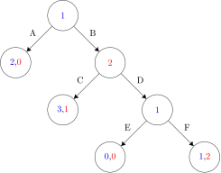
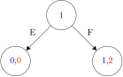
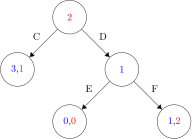
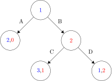
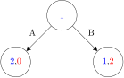
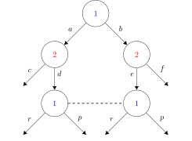
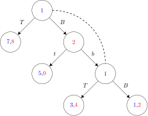
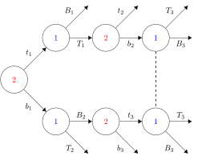
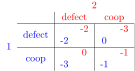

Computational Game Theory
Problem Sheet 3 - Dynamic Games
23 February 2021
Exercise 1: Formulating an extensive form game
Consider a 2-player game in which player 1 can choose \(A\) or \(B\). The game ends if she chooses \(A\), while it continues to player 2 if he chooses \(B\). Player 2 can then choose \(C\) or \(D\) with the game ending if \(C\) is chosen, and continuing again to player 1 if \(D\) is chosen. Player \(1\) can then choose \(E\) or \(F\), with the game ending either choice.
Exercise 1a
Model this as a game tree.
Exercise 1a: Solution
Exercise 1b
How many pure strategies does each player have?
Exercise 1b: Solution
The players' pure strategies are given by: \begin{align*} \Sigma_1 & = \{AE,AF,BE,BF\} \\ \Sigma_2 & = \{C,D\} \end{align*} Hence, player \(1\) has four pure strategies and player \(2\) has two.
Exercise 1c
Identify the subgames of this game.
Exercise 1c: Solution
Exercise 1c: Solution
Exercise 1c: Solution
Exercise 1d
Suppose that choice \(A\) gives utilities \((2, 0)\) (i.e., \(2\) to player \(1\), \(0\) to player \(2\)), choice \(C\) gives \((3, 1)\), choice \(E\) gives \((1, 1)\), and \(F\) gives \((1, 2)\). Then what are the Nash equilibria of the game? What SPNE outcome(s) does Zermelo’s algorithm yield?
Exercise 1d: Solution
The pure Nash equilibria are: \begin{equation*} (AE,D), (AF,D), (BE,C) \end{equation*}
Exercise 1d: Solution
By Zermelo’s algorithm:

Exercise 1d: Solution
By Zermelo’s algorithm:
Exercise 1d: Solution
By Zermelo’s algorithm:
Exercise 1d: Solution
By Zermelo’s algorithm:
Exercise 2: Imperfect information games
Consider an extensive form imperfect information game in which each player \(i\) has \(k\) information sets, that is, \(\lvert\mathcal{I}\rvert = k\) for all \(1\le i \le n\).
Exercise 2a
If a player has an identical number \(m\) of possible actions in each information set, how many pure strategies does he have?
Exercise 2a: Solution
Strategies in imperfect information games are functions from information sets to actions. So how many functions \(\sigma : [1..k] \to [1..m]\) are there? There are \(m^k\).
Exercise 2b
If a player has \(m_j\) actions in the \(j^\text{th}\) information set (\(1\le j \le k\)), how many pure strategies does he have?
Exercise 2b: Solution
For each information set, we need to assign an action. We have \(m_1\) choices for the first information set, \(m_2\) for the second, etc., so the player has \begin{equation*} \prod_{j=1}^k m_j \end{equation*} pure strategies in total.
Exercise 3: Imperfect information games
Consider the three games of imperfect information show in Figure 1 (information sets for player I are shown via ovals rather than dotted lines).
- For each of the games, what information can player I lose while playing the game?
- For each game, write down the information sets and pure strategies for both players.
- For game B, identify any pure strategy Nash equilibria.
Exercise 3i
Exercise 3i: Solution
Information player I can lose: if they get to the non-degenerate information set, they know either \((a,d)\) or \((b,e)\) has been played, but they do not know which one exactly.
Exercise 3i: Solution
Information sets: identifying sequences of actions with states, we see that the information sets are \([],[a],[b], [ad;be]\).
Exercise 3i: Solution
Player 1 pure strategies: \begin{align*} &\sigma_1 : \begin{cases} [] \mapsto a \\ [ad;be] \mapsto r \end{cases}\quad &&\sigma_2 : \begin{cases} [] \mapsto a \\ [ad;be] \mapsto p \end{cases} \\ &\sigma_3 : \begin{cases} [] \mapsto b \\ [ad;be] \mapsto r \end{cases}\quad &&\sigma_4 : \begin{cases} [] \mapsto b \\ [ad;be] \mapsto p \end{cases} \end{align*}
Exercise 3i: Solution
Player 2 pure strategies: \begin{align*} &\sigma_1 : \begin{cases} [a] \mapsto c \\ [b] \mapsto e \end{cases}\quad &&\sigma_2 : \begin{cases} [a] \mapsto c \\ [b] \mapsto f \end{cases} \\ &\sigma_3 : \begin{cases} [a] \mapsto d \\ [b] \mapsto e \end{cases}\quad &&\sigma_4 : \begin{cases} [a] \mapsto d \\ [b] \mapsto f \end{cases} \end{align*}
Exercise 3ii
Exercise 3ii: Solution
Information player I can lose: they can forget if they are in the first state or third state - that is, whether or not player two has played yet.
Exercise 3ii: Solution
Information sets: identifying sequences of actions with states, we see that the information sets are \([B],[;Bb]\).
Exercise 3ii: Solution
Player 1 pure strategies: \begin{equation*} \sigma_1 : [;Bb] \mapsto T\quad \sigma_2 : [;Bb] \mapsto B \end{equation*}
Exercise 3ii: Solution
Player 2 pure strategies: \begin{equation*} \sigma_1 : [B] \mapsto t\quad \sigma_2 : [B] \mapsto b \end{equation*}
Exercise 3ii: Solution
Nash equilibria: \(T, t\) and \(T, b\) are Nash equilibria.
Exercise 3iii
Exercise 3iii: Solution
Information player I can lose: if they get to the non-degenerate information set, they know either \((t_1, T_1, b_2)\) or \((b_1,B_2,t_3)\) has been played, but they do not know which one exactly.
Exercise 3iii: Solution
Information sets: identifying sequences of actions with states, we see that the information sets are \([],[t_1], [b_1], [t_1T_1], [b_1B_2], [t_1T_1b_2;b_1B_2t_3]\).
Exercise 3iii: Solution
Player 1 pure strategies: \begin{align*} &\sigma_1 : \begin{cases} [t_1] \mapsto T_1 \\ [b_1] \mapsto T_2 \\ [t_1T_1b_2;b_1B_2t_3] \mapsto T_3 \end{cases}\quad &&\sigma_2 : \begin{cases} [t_1] \mapsto T_1 \\ [b_1] \mapsto T_2 \\ [t_1T_1b_2;b_1B_2t_3] \mapsto B_3 \end{cases} \\ &\sigma_3 : \begin{cases} [t_1] \mapsto T_1 \\ [b_1] \mapsto B_2 \\ [t_1T_1b_2;b_1B_2t_3] \mapsto T_3 \end{cases}\quad &&\sigma_4 : \begin{cases} [t_1] \mapsto T_1 \\ [b_1] \mapsto B_2 \\ [t_1T_1b_2;b_1B_2t_3] \mapsto B_3 \end{cases} \end{align*}
Exercise 3iii: Solution
Player 1 pure strategies: \begin{align*} &\sigma_5 : \begin{cases} [t_1] \mapsto B_1 \\ [b_1] \mapsto T_2 \\ [t_1T_1b_2;b_1B_2t_3] \mapsto T_3 \end{cases}\quad &&\sigma_6 : \begin{cases} [t_1] \mapsto B_1 \\ [b_1] \mapsto T_2\\ [t_1T_1b_2;b_1B_2t_3] \mapsto B_3 \end{cases} \\ &\sigma_7 : \begin{cases} [t_1] \mapsto B_1 \\ [b_1] \mapsto B_2 \\ [t_1T_1b_2;b_1B_2t_3] \mapsto T_3 \end{cases}\quad &&\sigma_8 : \begin{cases} [t_1] \mapsto B_1 \\ [b_1] \mapsto B_2 \\ [t_1T_1b_2;b_1B_2t_3] \mapsto B_3 \end{cases} \end{align*}
Exercise 3iii: Solution
Player 2 pure strategies: \begin{align*} &\sigma_1 : \begin{cases} [] \mapsto t_1 \\ [t_1T_1] \mapsto t_2 \\ [b_1B_2] \mapsto t_3 \end{cases}\quad &&\sigma_2 : \begin{cases} [] \mapsto t_1 \\ [t_1T_1] \mapsto t_2 \\ [b_1B_2] \mapsto b_3 \end{cases} \\ &\sigma_3 : \begin{cases} [] \mapsto t_1 \\ [t_1T_1] \mapsto b_2 \\ [b_1B_2] \mapsto t_3 \end{cases}\quad &&\sigma_4 : \begin{cases} [] \mapsto t_1 \\ [t_1T_1] \mapsto b_2 \\ [b_1B_2] \mapsto b_3 \end{cases} \end{align*}
Exercise 3iii: Solution
Player 2 pure strategies: \begin{align*} &\sigma_5 : \begin{cases} [] \mapsto b_1 \\ [t_1T_1] \mapsto t_2 \\ [b_1B_2] \mapsto t_3 \end{cases}\quad &&\sigma_6 : \begin{cases} [] \mapsto b_1 \\ [t_1T_1] \mapsto t_2 \\ [b_1B_2] \mapsto b_3 \end{cases} \\ &\sigma_7 : \begin{cases} [] \mapsto b_1 \\ [t_1T_1] \mapsto b_2 \\ [b_1B_2] \mapsto t_3 \end{cases}\quad &&\sigma_8 : \begin{cases} [] \mapsto b_1 \\ [t_1T_1] \mapsto b_2\\ [b_1B_2] \mapsto b_3 \end{cases} \end{align*}
Question 4: Iterated games
Let’s consider playing the infinitely repeated prisoner’s dilemma, using finite state automata strategies, and measuring utility over infinite runs, as the average utility obtained, as discussed in the lecture. Recall that the payoff matrix for the (one shot) prisoner's dilemma is as follows:
Figure 2 shows three two-state strategies for playing the iterated prisoner’s dilemma.
Question 4: GRIM
Question 4: TIT-FOR-TAT
Question 4: TAT-FOR-TIT
Question 4a
Informally explain what TAT-FOR-TIT does.
Question 4a: Solution
TAT-FOR-TIT starts with defecting and then repeats its action as long as his opponent cooperates, if his opponent defects, he changes his action. Repeat action if opponent cooperates, toggle if opponent defects.
An informal way to understand is that TAT-FOR-TIT identifies whether its opponent displays exploitable behaviour, and when it does not. As long as the opponent cooperates TAT-FOR-TIT will exploit its behaviour by defection. As soon as the opponents shows signs of sense by defecting once TAT-FOR-TIT will cooperate as long as the opponent is sensible enough to cooperate as well. Once the opponent tries to exploit TAT-FOR-TIT by deviating, the latter punishes the former by defecting as well.
Question 4b
Consider each strategy playing against each other strategy (including itself). Compute the runs that would be generated, and identify the finite but in- finitely repeating sequence of outcomes. Use this repeating sequence to compute the utility obtained by each strategy in each pairing.
Question 4b: Solution
Question 4c
Which of these pairs of strategies do you think forms a Nash equilibrium? (An informal argument will suffice.)
Question 4c: Solution
Observe that to establish that some machine strategy profile is not a Nash equilibrium, you need to formulate a better response for one of the players, and it may suffice to show this for one of the named machine strategies.
However, to establish that some profile of machine strategy is a Nash equilibria, you have to quantify over all possible strategies and show that none of them is a better response!
Question 4c: Solution
The following pairs are Nash equilibria:
- (GRIM, GRIM);
- (GRIM, TIT-FOR_TAT);
- (TIT-FOR-TAT, TIT-FOR-TAT);
- (TAT-FOR-TIT, TAT-FOR-TIT).